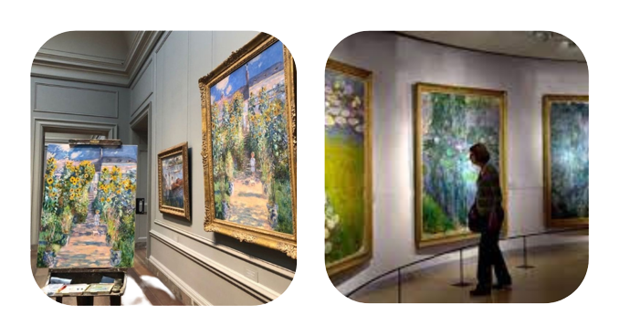

O Impressionismo é um movimento artístico que surgiu na França no século XIX, caracterizado pela representação de cenas cotidianas de forma naturalista e espontânea, valorizando a sensibilidade à luz e a técnica de pinceladas visíveis. Os artistas impressionistas buscavam capturar a atmosfera e a luminosidade do momento em suas pinturas.
